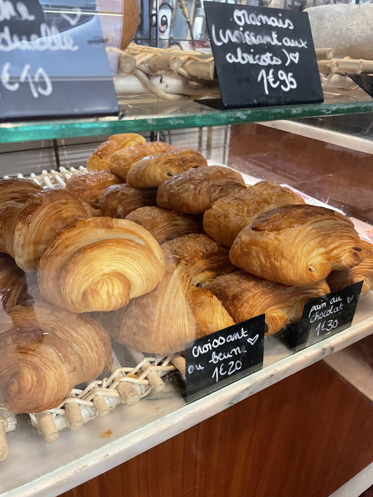
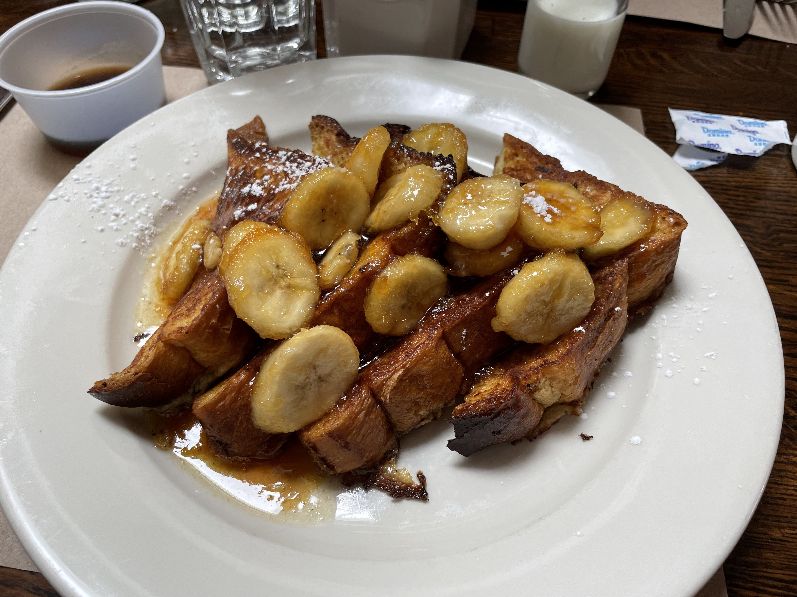

Sunny Side Cafe ☕

About
Welcome to Sunny Side Cafe, your cozy neighborhood breakfast spot nestled in the heart of Greenwich Village, NYC. Since opening our doors in 2017, we’ve been serving up classic morning favorites with a creative twist — from fluffy buttermilk pancakes and perfectly poached eggs to locally roasted coffee and fresh-pressed juices.
Built on a love for community and comfort, Sunny Side Cafe is more than just a restaurant — it’s a place where locals gather, friends linger, and mornings start right. Our ingredients are locally sourced, our menu is seasonally inspired, and every dish is made with care. Whether you’re catching up over brunch or grabbing a quiet cup of coffee, you’ll always find warmth, flavor, and a friendly face waiting for you here.